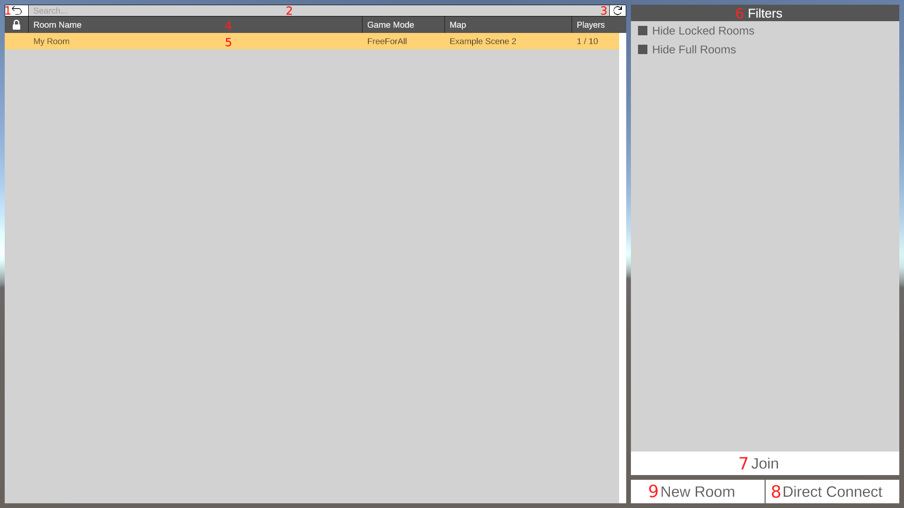
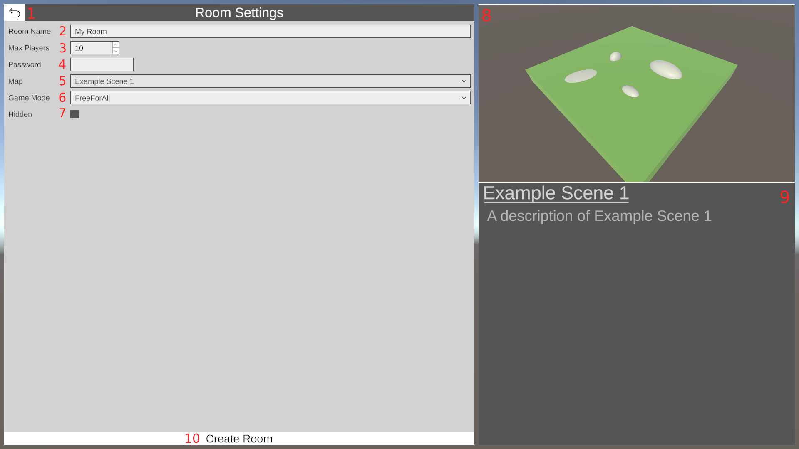
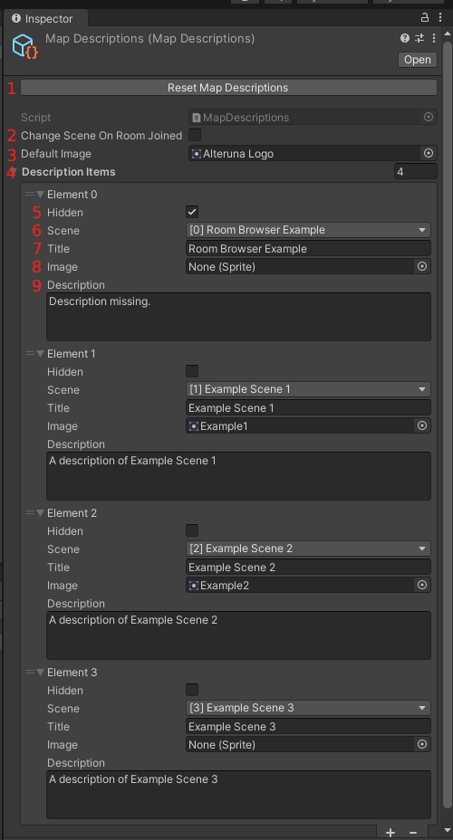

RoomBrowser Class
The RoomBrowser is a prefab that gives you access to more settings when creating a room, and filters when looking for a room to join.
Namespace: Alteruna.Multiplayer.PrefabsAssembly: Alteruna.Doc (in Alteruna.Doc.dll) Version: 1.0.0+197d965a098acb48958a825b1bb40aa5467dffd7
- Inheritance
- Object RoomBrowser
[DocStyle]
The browser shows you all available rooms, and gives you options to sort or filter rooms.
On the left side of the browser you can see all available rooms based on your filter settings.
On the right side of the browser you can select filters.
Below are some instructions on how to use the browser.

-
The back button: Hides the Room Browser
-
The search bar: Filters rooms by name.
-
The refresh button: Refreshes the room list.
-
The table header: A list of column headers. Pressing any of the column headers will sort the list by that header.
Default sorting is in the order the rooms was retreived from the server.
-
Table row: The table row, or list item, represent a room from the list of rooms retrieved from the server.
-
Filters: A list of filters that allows the player to customize what rooms to show and hide.
-
The Join/Leave button: If not in a room when pressing the button joins the selected room. Disabled if no room is selected.
When in a room the button will change text to Leave. Leaves the current room when pressed.
-
The Direct Connect button: Pressing this pops up the Direct Connect menu.
The menu takes in a join code that generated when creating a hidden room. Hidden rooms are not shown in the list of rooms.
-
The New Room button: Pressing this opens up the Create Room Menu.
Below are some instructions on how to use the Create Room Menu.

-
The back button: Goes back to the RoomBrowser.
-
Room Name: The name that will be displayed in the browser. This can also be changed after creating the room.
-
Max Players: How many players can join the room. Max value is limited to the value of Max Players in the Multiplayer Component.
-
Password: Room will require a password to join if this field is filled.
-
Map: Select what scene to load when the room is joined. The options available are defined in the MapDescriptions file.
Note:
Automatically switching scenes after creating/joining a room is a default behaviour, but it can be turned off.
There is an option in the RoomBrowser and CreateRoomMenu scripts called ChangeSceneOnRoomJoined.
If this is turned off you won't automatically switch scenes when creating/joining a room. This can be useful when
your only want to simulate a scene change. For example if you switch presets instead of scenes.
-
Game Mode: What Game Mode to play. This property only serves as an indicator. The actual game modes is something you will have to implement yourself.
-
Hidden: Should room be hidden from the browser? If true, you will get an invite code when the room is created.
Anyone with the invite code can join the room via the Direct Connect button.
-
Scene Preview Image: An image associated with the selected map. You can change the image in the MapDescriptions file.
-
Description text: Text that describes the map. You can change the text in the MapDescriptions file
-
Create Room: Pressing this button creates a new room with selected settings.
The MapDescriptions file contains settings for the RoomBrowser. This file defines what maps you can select in the Create Room Menu.
Below are some instructions on how the MapDescriptions file can be modified to better fit your game.

-
Reset Map Descriptions: Pressing this button will reset all settings in the MapDescriptions file.
Settings will be replaced with default values based on the current build settings.
-
Change Scene On Room Joined: If enabled, load the selected scene when you create or join a room.
-
Default Image: The default image to display for a map if no image have been selected.
-
Description Items: The list of all maps that can be selected when creating a room.
-
Hidden: When true, don't appear as an option among the selectable maps in the Create Room Menu.
-
Scene: What scene should be loaded when loading a map?
-
Title: The name that will appear as the title of a map.
-
Image: The image to show when creating a room. Default Image is shown if no image is selected.
-
Description: The description of the map. This is displayed when creating a room.
The RoomBrowser is a more complex example of how you can use Alteruna's room system to handle rooms.
The RoomBrowser also have things you can tweak under the hood.
The RoomBrowser uses
Writer.SerializeAndPackString<T> and
Reader.DeserializePackedString<T> to serialize bake in
RoomBrowserCustomRoomInfo into the room name. If you want to handle your own custom room data you can use the Writer and Reader methods
to easier communicate your custom data.